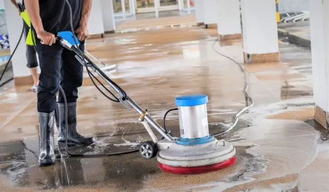
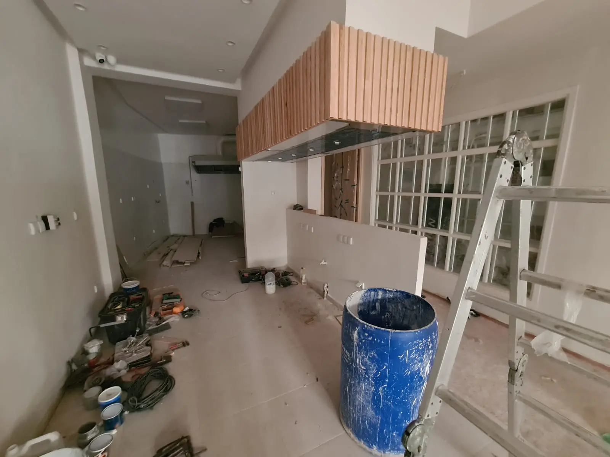
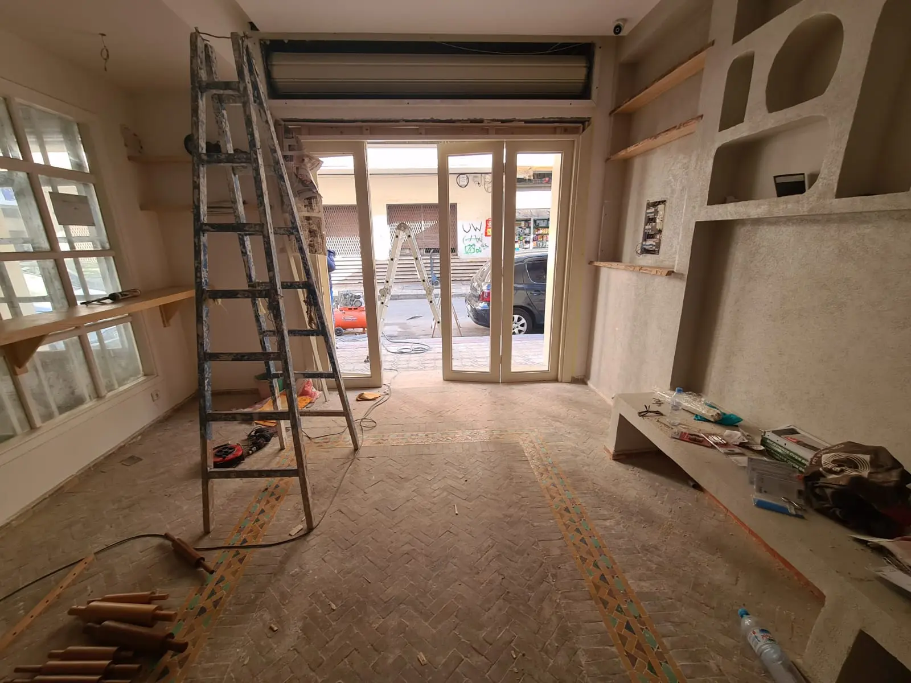

comment faire le nettoyage de fin chantier casablanca
Le nettoyage de fin de chantier : une étape essentielle pour clôturer des travaux de construction ou de rénovation
Le nettoyage de fin de chantier intervient après travaux pour finaliser un chantier de construction ou de rénovation. Cette opération de dépoussiérage, de lavage et d’évacuation des déchets et gravats de chantier garantit aux entreprises en charge des travaux.
la livraison de locaux propres, sains et sûrs.Alors, Le nettoyage de fin de chantier ou après travaux nécessite l’intervention d’un professionnel du nettoyage. Votre société de nettoyage Ecocomplet vous propose ses prestations de nettoyage de fin de chantier dans toute la région Maroc.
Lorsqu'il s'agit de garder vos planchers propres et hygiéniques, un nettoyage professionnel occasionnel des tapis peut faire toute la différence.
Avant de choisir les meilleures méthodes de nettoyage de tapis pour votre maison, poursuivez votre lecture pour en savoir plus sur les cinq méthodes les plus courantes pour nettoyer votre revêtement de sol afin de choisir celle qui vous convient le mieux.
Qu’est-ce qu’un nettoyage de fin de chantier ou après travaux ?
Une rénovation ou une construction neuve est dite achevée quand l’entreprise a terminé les travaux à réaliser et que le site a été entièrement inspecté et nettoyé. Lenettoyage de fin de chantier s’effectue généralement durant la phase d’opérations préalables à la réception (OPR). Il s’agit de l’étape finale des travaux intervenant juste avant la livraison au client.
Bien plus qu’un simple travail de ménage ou service de débarras pour l’évacuation des gravats de chantier, le nettoyage après travaux garantit une utilisation des locaux en toute sécurité par les particuliers. En effet, après des travaux de rénovation ou de construction.
il reste souvent des déchets et gravats potentiellement dangereux ou polluants qu’il convient de retirer rapidement. Votre societe de nettoyage casablanca réalise un travail rigoureux pour remettre en état tout type de locaux après travaux : maison, bureaux, bureau bâtiment industriel, etc.
Qui est concerné par le nettoyage de fin de chantier ?
La norme NF P04-002 dédiée aux marchés privés de travaux du bâtiment précise qui est concerné par la remise en état des locaux en fin de chantier. Concernant le nettoyage, elle indique que les entrepreneurs doivent laisser les lieux propres. sans déchets ni gravats après leur intervention. Les societe de nettoyage qui interviennent sur un chantier. doivent donc prévoir un nettoyage après travaux. Si les entreprises ne disposent pas des moyens nécessaires pour remettre en état les locaux. elles peuvent sous-traiter ces tâches à une société spécialisée en nettoyage de fin de chantier.
Comment se déroule un nettoyage de fin de chantier ?
Notre societe de nettoyage effectue un entretien complet du bâtiment pour effacer toute trace du chantier. La remise en état de locaux après travaux se réalise par étapes.
L’évacuation des déchets
Un chantier génère des déchets de toute sorte : emballage, gravats, poussières lourdes, etc. Nous procédons en premier lieu au déblayage de résidus de travaux avant d’entamer le nettoyage des locaux. Notre societe de nettoyage casablanca se charge également de retirer les rubans de masquage et les bâches de protection utilisés au cours du chantier.
Le dépoussiérage des placards
Le travail de nettoyage après travaux comprend le dépoussiérage des mobiliers ou accessoires présents dans les locaux : placards, éclairages, ventilateurs, etc.
Le nettoyage des sols et des murs
Notre societe de nettoyage casablanca effectue ensuite le balayage des sols ainsi que le lessivage et le rinçage de toutes les surfaces horizontales et verticales : carrelage, parquets, moquettes, plafonds, etc. La remise en état passe également par l’élimination des traces de colle, de ciment ou de peinture sur les sols et les murs.
Le nettoyage des vitres
La remise en état des vitres après travaux nécessite des techniques de nettoyage particulières. Nous effectuons le dégraissage, le grattage et le lavage des vitres pour vous assurer une propreté optimal.
L’aération des locaux
À l’issue de nos prestations, nous favorisons une atmosphère saine au sein de la maison ou du bâtiment en procédant à une aération intensive des locaux.
Le nettoyage d’extérieur
Les travaux de rénovation tout comme les chantiers dédiés à une construction neuve n’impactent pas uniquement l’intérieur des locaux. La dernière phase d’un nettoyage de fin de chantier concerne la remise en état de l’extérieur du bâtiment. Cette étape de de nettoyage inclut :
Quel est le prix d’un nettoyage de fin de chantier ou après travaux ?
Le prix des prestations de nettoyage après travaux peut varier en fonction de plusieurs critères.
Les moyens humains mis en œuvre
Le prix du nettoyage varie en fonction du nombre de personnes nécessaires à l’intervention, du niveau de compétences requis et des amplitudes horaires de travail.
Les moyens matériels mis à disposition
Selon le type de nettoyage, différents matériels de lavage et de décapage doivent être utilisés, ce qui peut faire évoluer le prix des prestations :
Les caractéristiques des lieux
Selon les locaux, une majoration de tarif peut être pratiquée, le nettoyage nécessitant des compétences particulières : bâtiment hospitalier, bionettoyage, etc.
La superficie des locaux
Selon la taille des locaux, le nettoyage de fin de chantier nécessite un temps d’intervention plus ou moins long. Le prix du nettoyage varie donc en fonction de la superficie du chantier.Les surfaces à traiter
Il existe différentes techniques de nettoyage selon les surfaces à traiter : plafonds, murs, sols, carrelage, parquets, moquettes, vitres, etc. Le prix des prestations de nettoyage peut varier selon le niveau d’entretien requis pour ces surfaces.Les normes d’hygiène et de sécurité à respecter
Certaines zones d’un bâtiment ou d’une maison nécessitent un nettoyage spécifique. C’est le cas notamment des cuisines, des sanitaires ou encore des entreprises dont les locaux doivent répondre à des normes d’hygiène strictes. Notre societe de nettoyage casablanca HVNET NETTOYAGE utilise des méthodes et des produits adaptés pour garantir la désinfection des locaux concernés. Le tarif de nos prestations de nettoyage tient compte de cet entretien spécifique.Le dépoussiérage des placards
Le travail de nettoyage après travaux comprend le dépoussiérage des mobiliers ou accessoires présents dans les locaux : placards, éclairages, ventilateurs, etc.Le nettoyage des sols et des murs
Notre societe de nettoyage casablanca effectue ensuite le balayage des sols ainsi que le lessivage et le rinçage de toutes les surfaces horizontales et verticales : carrelage, parquets, moquettes, plafonds, etc. La remise en état passe également par l’élimination des traces de colle, de ciment ou de peinture sur les sols et les murs.Le nettoyage des vitres
La remise en état des vitres après travaux nécessite des techniques de nettoyage particulières. Nous effectuons le dégraissage, le grattage et le lavage des vitres pour vous assurer une propreté optimal.L’aération des locaux
À l’issue de nos prestations, nous favorisons une atmosphère saine au sein de la maison ou du bâtiment en procédant à une aération intensive des locaux.
Le nettoyage d’extérieur
Les travaux de rénovation tout comme les chantiers dédiés à une construction neuve n’impactent pas uniquement l’intérieur des locaux. La dernière phase d’un nettoyage de fin de chantier concerne la remise en état de l’extérieur du bâtiment. Cette étape de de nettoyage inclut :
Pourquoi choisir Ecocomplet pour un nettoyage de fin de chantier ou après travaux ?
Ecocomplet est une entreprise spécialisée en nettoyage industriel. Nous disposons des moyens et des techniques nécessaires pour réaliser un nettoyage efficace, précis et rapide de locaux après travaux. Nous effectuons la totalité de votre nettoyage de fin de chantier dans un délai très court à casablanca et aux alentours .
Pour connaître le prix d’un nettoyage de fin de chantier, n’hésitez pas à demander un devis à notre societe de nettoyage . Contactez dès maintenant par téléphone un professionnel de la societe de nettoyage casablanca pour obtenir votre devis !
Pour le nettoyage Résidentiel et Commercial
Notre personnel est formé pour nettoyer tout ce dont vous avez besoin !